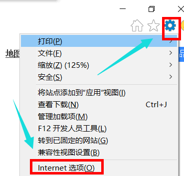
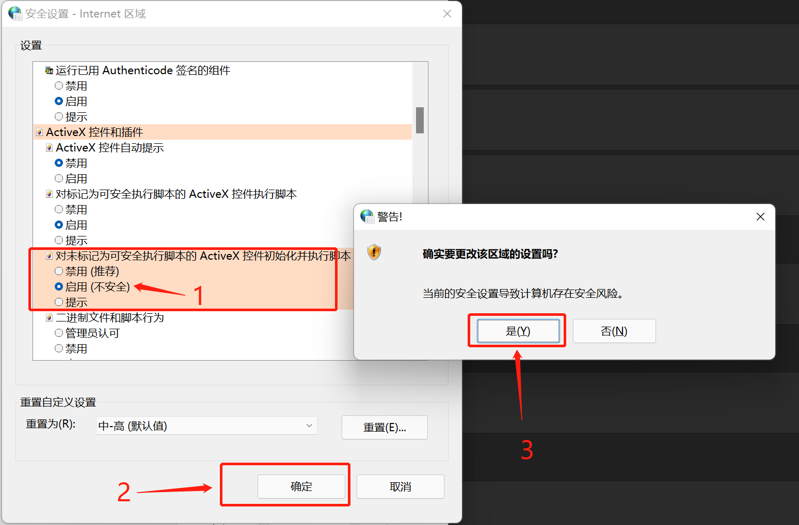
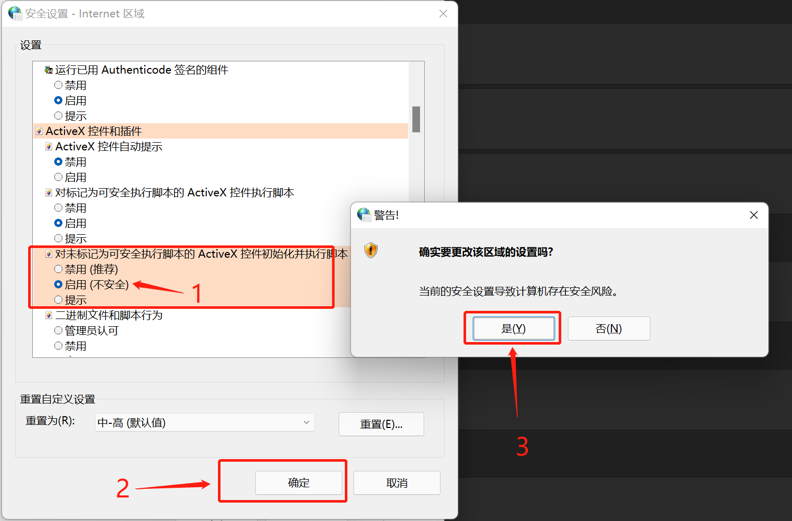
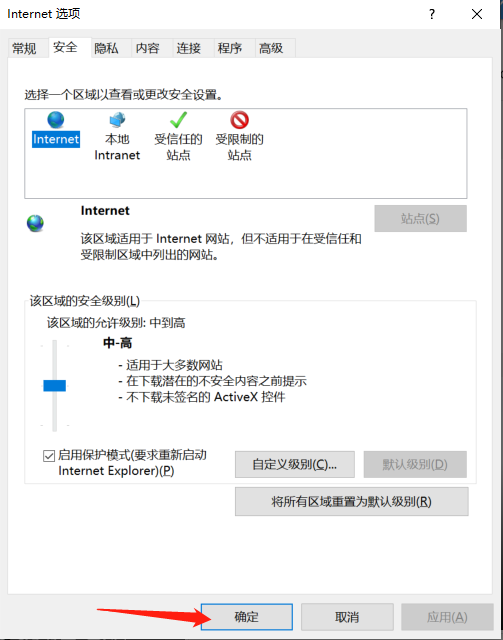

检测到您的浏览器未打开的跳转许可，请按下方指引操作：
-
步骤1：点击IE右上角齿轮配置按钮，点击“Intertne选项”。
-
步骤2：在“Internet 选项，安全风险”对话框中，点击“自定义级别”按钮，进入到“安全设置-internet区域”，找到“对未标记为可安全执行脚本的ActiveX控件并执行脚本”，切换成“启用（不安全）”状态，设置完成之后，点击下方的“确定”按钮。注意：不需要重新启动计算机
 

-
最后：在 “Internet 选项，安全风险”对话框中，点击“确定”按钮，完成开启安全设置操作。